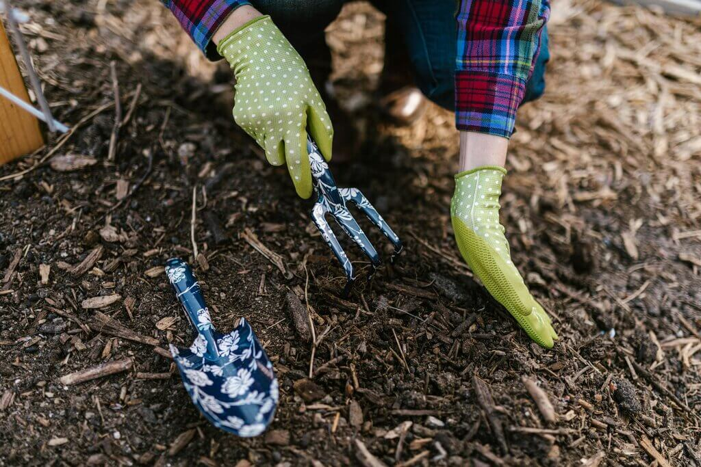

Why Mulch?
Mulch is any protective ground cover laid over the the soil in your yard of flower and garden beds. Mulch improves the look of your yard, but also serves several practical purposes. Mulch improves moisture retention in the soil and regulates soil temperature, so your plants stay healthier. Mulch that is made of natural woods biodegrades and adds nutrients to the soil, also helping your plants. By covering the soil, mulch prevents soil erosion, which can be especially important around your foundation. Mulch also suppresses weeds by blocking direct sunlight to the soil.
How much mulch do I need?
To find out how much mulch you need, measure the area that you want to cover. A good rule of thumb is that a 10x10 area will need at least 9 bags of mulch.
Then use this mulch calculator Mulch Calculator
Mulch Calculator